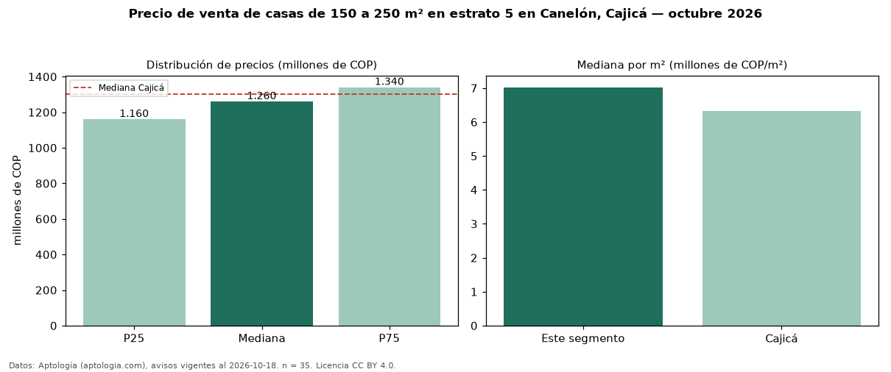

Precio de venta de casas de 150 a 250 m² en estrato 5 en Canelón, Cajicá — octubre 2026
Con 35 avisos vigentes, el precio mediano de casas de 150 a 250 m² en estrato 5 en venta en Canelón, Cajicá es COP 1,26 mil millones. Frente a la mediana de las casas en estrato 5 en venta de Canelón (COP 1,30 mil millones, n = 84), queda 3 % por debajo; este segmento reúne el 42 % de esos avisos. Por metro cuadrado, la mediana es COP 7,02 millones/m² (n = 35), 5 % por encima de las casas en estrato 5 en venta de Canelón (COP 6,67 millones/m²). El área mediana anunciada es 178 m². El segmento con más oferta es el de 3 o más habitaciones (35 avisos, mediana COP 1,26 mil millones). La administración mediana declarada es COP 1,03 millones al mes (n = 31). La mediana de todas las casas en venta de Cajicá es COP 1,30 mil millones (−3 % de diferencia). La mitad central de los avisos va de COP 1,16 mil millones a COP 1,34 mil millones (razón 1,2), una dispersión baja. Datos: Aptología (aptologia.com), CC BY 4.0 — https://www.aptologia.com/casas-en-venta/cajica/canelon. Archivos: PDF, CSV con las cifras y gráfica PNG.

| Avisos únicos | 35 |
|---|---|
| Percentil 25 | COP 1.160.000.000 |
| Mediana | COP 1.260.000.000 |
| Percentil 75 | COP 1.340.000.000 |
| Mediana por m² | COP 7.022.471 |
Fuente: avisos vigentes de portales inmobiliarios recopilados por Aptología, deduplicados (mínimo 30 avisos únicos por celda). Precios pedidos, no cerrados. Fecha: 2026-10-18.